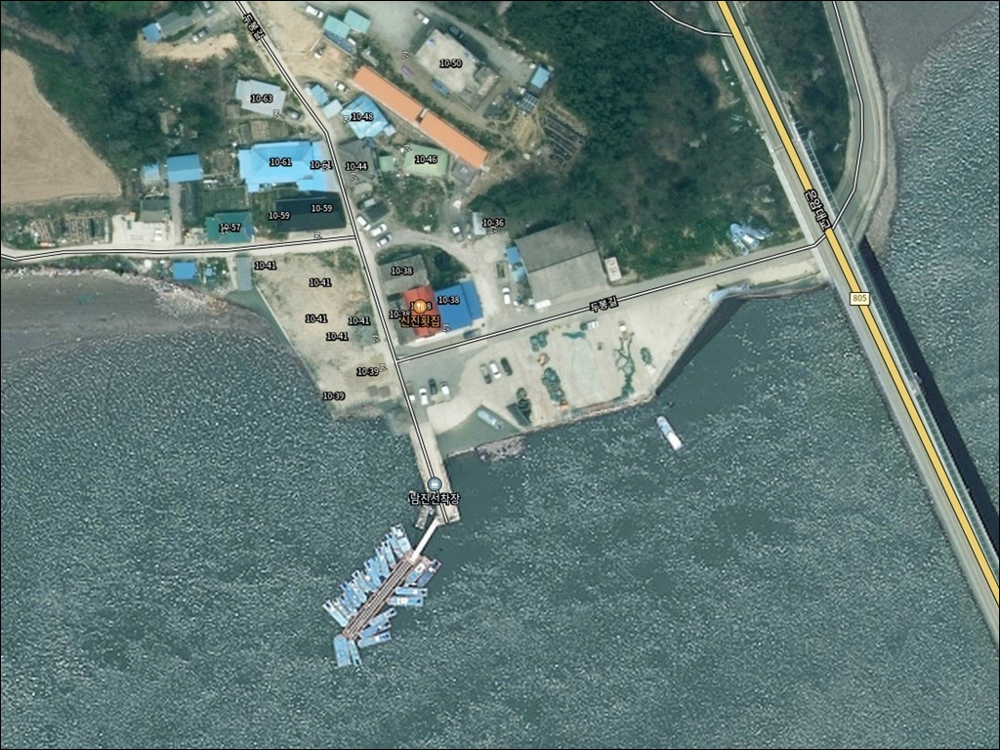
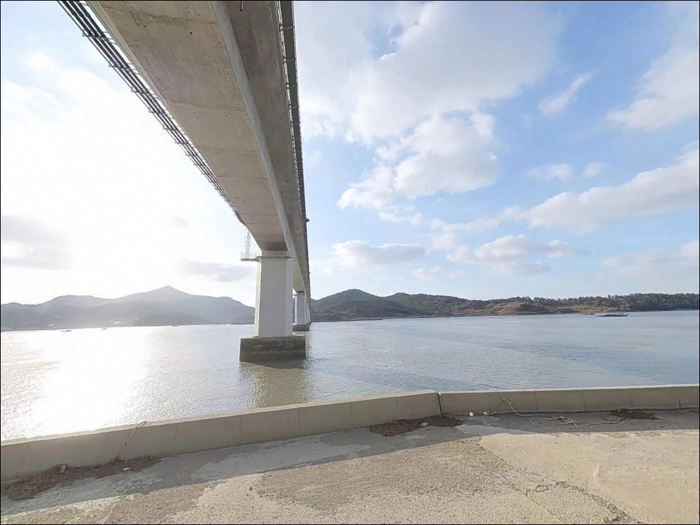
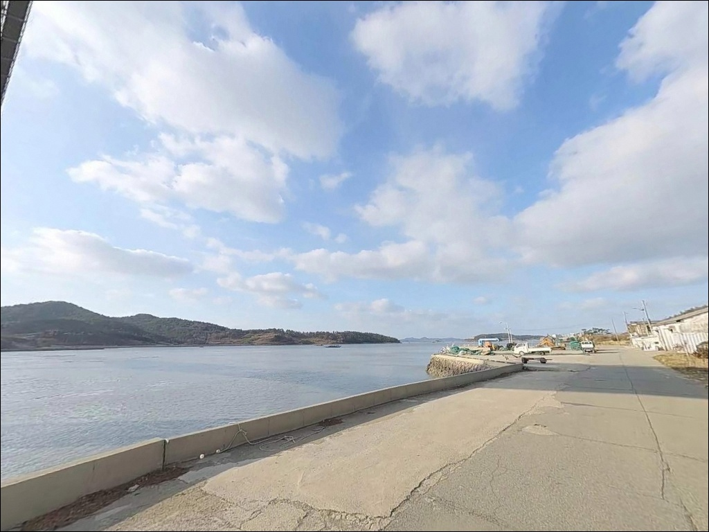
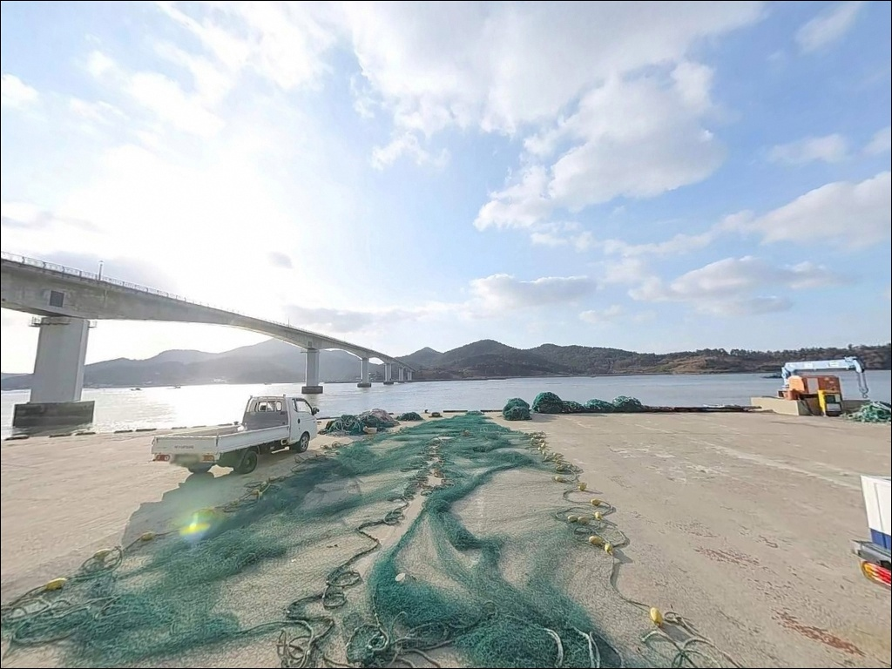
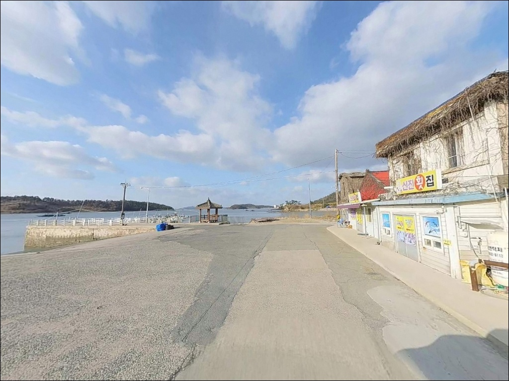
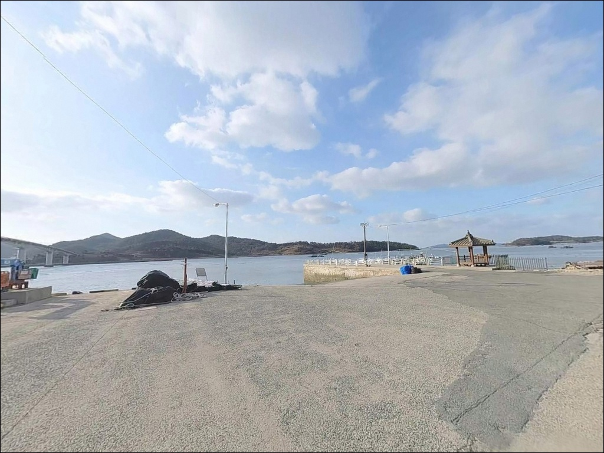
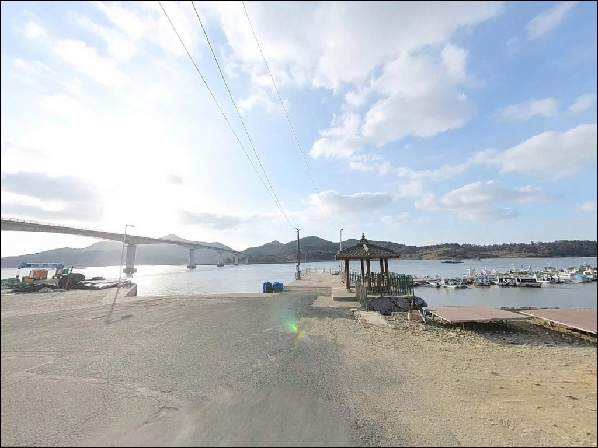
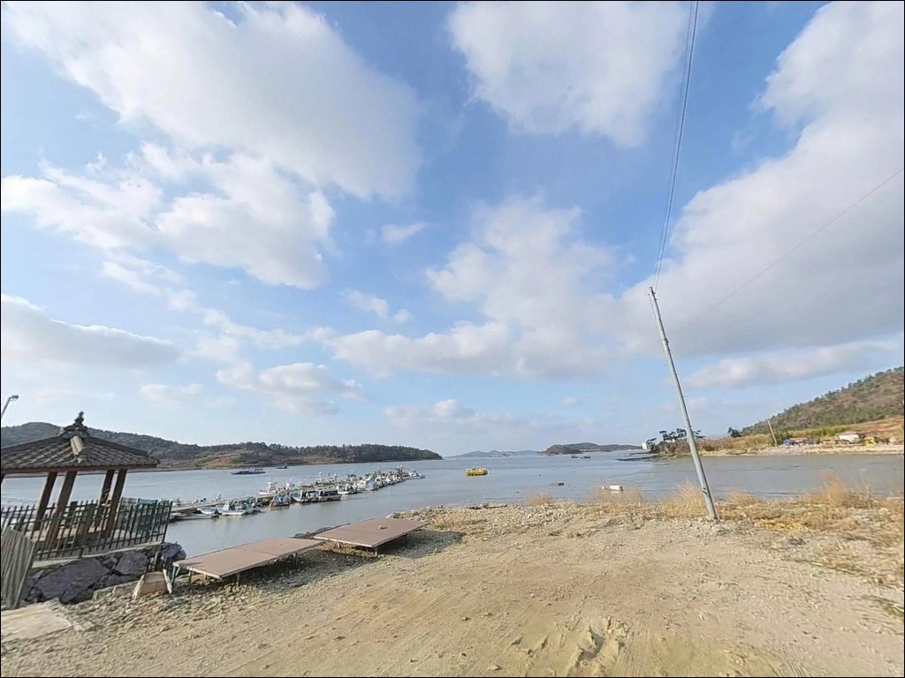
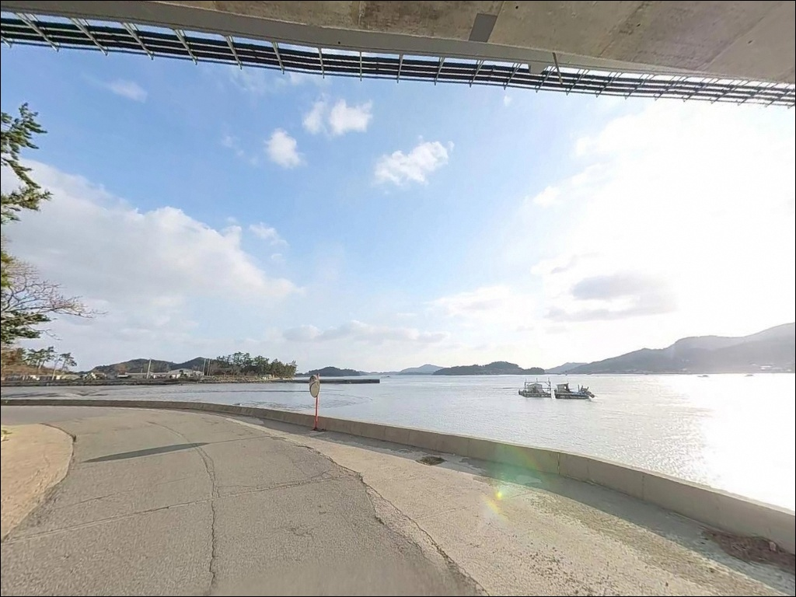

이 페이지에는 광고(제휴 링크 포함)가 있으며, 광고 링크를 통해 구매하면 운영자가 판매 수익 또는 수수료를 받을 수 있습니다. 포인트 사진: 카카오맵 스카이뷰·로드뷰. 이 페이지의 지도·사진 이미지는 카카오맵의 실제 서비스 이미지와 다를 수 있습니다.

남진선착장
전남 신안군 자은면 유각리 53-29
서해 선착장 낚시에서 가장 자주 틀리는 판단은
물때를 확인하지 않고 현장을 찾는 것입니다.
간만차가 큰 서해 특성상 사리 전후 저조 시간대에
남진선착장을 찾으면 수위가 낮아지고 조류가 거세져
어떤 채비를 써도 운용이 어려워지는 상황이 됩니다.
이 글은 남진선착장의 진입 조건과 물때 기준,
낚시 방식 적합성에 집중합니다.
조황 단정이나 특정 어종 보장은
이 글의 범위에 포함되지 않습니다.
전남 신안군 자은면 유각리, 자은도 남쪽에 자리한 남진선착장은
과거 자은도 주민의 여객선 거점이었던 곳입니다.
은암대교 개통 이후 여객 기능이 사라지고
현재는 김 양식 어항과 낚시터로 활용되고 있습니다.
외지 낚시인의 유입이 적고 조용한 환경 덕분에
붐비지 않는 한적한 포인트를 찾는 낚시인에게
어울리는 구조를 갖추고 있습니다.

자은도는 암태도를 경유하는 연결 도서군 안에 포함된 섬으로,
육지에서 차량으로 진입하면 암태도를 거쳐
은암대교를 건너 자은도로 들어오는 경로를 따릅니다.
남진선착장은 은암대교 인근 자은도 동쪽 끝 지점에 위치하며,
다리 아래에서 수로 입구 방향으로 자리한 구조입니다.
선착장까지 이어지는 진입로는
1차선 농로 수준으로 폭이 좁습니다.
급경사 구간은 없지만 도로 폭이 좁아
대형 SUV나 캠핑 장비를 실은 차량이라면
출발 전 위성지도로 진입 구간을 미리 확인하는 편이 안전합니다.
소형 승용차나 소형 SUV 기준으로는
진입에 큰 무리가 없는 수준입니다.
선착장 내부 회차 공간이 넉넉하지 않을 수 있어
어선 이동 동선을 확인한 뒤 주차 위치를 잡는 것이 기본입니다.
선착장 입구 인근 공터나 도로 가장자리 공간이
주차 후보로 활용됩니다.
진입로가 좁은 포인트에서는 출발 전 진입 동선 확인이 방문 성패를 가릅니다.

자은도 유각리 남단은 민가 밀집도가 낮고
외지 낚시인 유입이 적은 편입니다.
야간에는 차량 통행이 거의 없어
조용한 환경이 유지되는 구조입니다.
은암대교 교량 조명이 인근에 있어 일부 빛이 닿을 수 있지만,
선착장 자체 조명은 기대하기 어려워
개인 조명 장비는 반드시 준비해야 합니다.
내만형 구조에 가까운 지형 특성상
파도 직접 영향은 외항 포인트보다 덜한 편입니다.
다만 주차 공간이 좁고
어선 조업이 이루어지는 공간이라
차박을 메인 목적으로 삼기보다는
낚시 후 잠시 머무는 방식이 현실적입니다.

남진선착장 인근은 소형 어촌 마을 특성상
선착장 반경 내 매점이나 식당을 기대하기 어렵습니다.
확정된 편의시설 정보가 없으므로
완전 자급 체제로 진입하는 것이 현실적인 준비 방식입니다.
식수, 얼음, 낚시 소품, 비상 식량 모두
출발 전에 갖춰야 합니다.
자은면 중심부 방향으로 차량 이동 시
10분 이내에 편의점을 이용할 수 있습니다.
부족한 소품이 생겼을 때 활용하기 좋은 동선입니다.
응급 상황 발생 시에는 자은면 보건지소가
이동 가능한 가장 가까운 의료 시설이며,
대형 병원은 목포 방향으로 상당한 거리를 이동해야 합니다.
기본 비상약품은 출발 전에 준비해 두는 편이 좋습니다.

남진선착장 방문에서 가장 먼저 확인할 것은 물때입니다.
서해 다도해 특성상 간만차가 크고
사리 전후에는 조류가 빠르게 움직여
채비 컨트롤이 어려워집니다.
바다타임에서 신안 자은면 기준 물때표를 확인하고
조금 전후 또는 만조 전후 타이밍을 노려
출발 시각을 정하는 것이 기본 전략입니다.
기상 예보는 출조 당일 아침 다시 한번 확인하는 편이 좋습니다.
섬 지역 특성상 바람과 안개 변화가 빠를 수 있습니다.
갯바위 접근이 포함된 포인트라면
이끼나 물기로 인해 발판이 미끄러울 수 있어
미끄럼 방지 신발과 구명조끼는 기본 장비입니다.
어선 이동이 이루어지는 선착장이므로
어구와 계선 장비에 채비가 걸리지 않도록 자리를 잡아야 합니다.
갯바위 지형에서는 채비 손실이 잦은 편이라
여분 채비는 넉넉히 챙기는 것이 기본입니다.

남진선착장은 자은도 남쪽 해안에서
은암대교 수로 입구와 인접한 구조입니다.
선착장 주변으로 갯바위가 분포하고 있으며,
내만형 지형 특성상 파도 직접 노출은 적지만
수로 흐름의 영향을 받는 조류 구간이 형성됩니다.
이 조류 흐름이 회유성 어종이 지나는 길목 역할을 합니다.
수심은 선착장 끝단 기준 5~8m 수준으로,
서해 소형 선착장치고는 비교적 수심이 확보된 편입니다.
선착장 발치 구조물 주변과 갯바위 경계선이
어류가 머물기 좋은 구조를 만들어냅니다.
원투로 멀리 던지는 방식과
발치 가까운 구조물을 탐색하는 방식 모두
이 지형 조건에 맞는 공략입니다.
바닥은 모래와 펄이 섞인 구간이 있으며
갯바위 경계에는 밑걸림이 발생할 수 있습니다.
선착장 발치보다 멀리 던진 뒤
천천히 끌어오는 방식이 채비 손실을 줄이는 방법입니다.
최신 조황은 출조 전 자은도 낚시 조황,
유각리 선착장 조황으로 검색해 확인하는 편이 좋습니다.

에깅이 이 포인트 지형과 잘 맞는 스타일입니다.
갯바위 경계 지점과 선착장 벽면 주변은
에기를 탐색하기에 적합한 구조를 갖추고 있습니다.
자은도 일대 서해 다도해 권역에서는
봄과 가을 시즌에 갑오징어를, 계절에 따라 무늬오징어를
기대해볼 수 있는 지형 조건입니다.
조류가 살아있는 조금 전후 타이밍에
갯바위 경계를 따라 탐색하는 방식이 이 포인트와 잘 맞습니다.
원투낚시도 선착장 끝단에서 수로 방향으로
캐스팅하는 방식으로 어울립니다.
조류가 흐르는 바닥층에는
이 지역 연안에서 기대해볼 수 있는
붕장어, 보리멸, 숭어 계열 어종이
서식하기 좋은 조건이 갖춰져 있습니다.
조류가 안정되는 정조 타이밍에
채비를 멀리 보내 바닥을 탐색하는 방식이 유효합니다.
소형 루어낚시도 선착장 구조물 주변 탐색에 적합합니다.
소형 지그헤드 채비로 선착장 발치 벽면을 따라
천천히 끌어오는 방식이 이 포인트 구조와 잘 맞습니다.
야간 입장 시에도 선착장 발치를 중심으로
소형 록피시 계열 어종을 가볍게 탐색하는 방식으로 운용할 수 있습니다.

남진선착장 주차 여건이 여의치 않거나
조류 조건이 맞지 않을 때는
자은도 내 다른 선착장으로 이동하는 것이 현실적입니다.
자은도 서쪽의 고장마을 선창은
같은 섬 해안선에서 접근할 수 있는 첫 번째 대안입니다.
남진선착장과 조류 방향이 다르고
낚시 관련 기록이 더 남아 있는 포인트입니다.
자은도 남서부의 사월포항도
같은 섬 내 대체 포인트로 고려할 수 있습니다.
과거 어항으로 사용된 곳으로,
남진선착장과 비슷한 소형 선착장 구조에서
다른 방향의 조류와 수심을 탐색하기 좋습니다.
차박 여건이 더 나은 대안을 찾는다면
인근의 백길해수욕장 방면을 검토할 수 있습니다.
주차 공간이 더 넓고 야간 체류 환경이 안정적입니다.
성수기에는 혼잡할 수 있어
비수기 방문이 차박 목적에 더 맞는 선택입니다.

붐비지 않는 곳에서 에깅이나 원투낚시를 조용히 즐기고 싶은 낚시인이라면
남진선착장의 분위기는 잘 맞습니다.
물때만 맞춰서 간다면 기대에 맞는 출조가 될 수 있는 구조이며,
남진선착장은 서해 다도해 물때를 맞춰야 낚시 여건이 살아나는 구조입니다.
반면 편의시설이 갖춰진 큰 포인트를 기대한다면
이 선착장은 맞지 않습니다.
자급 준비와 좁은 진입로에 대한 사전 대비가 선행되어야 하고,
처음 방문이라면 고장마을 선창이나 사월포항을 함께 묶어
자은도 일대를 탐색하는 동선으로 접근하는 것이 효율적입니다.
낚시를 마친 뒤 조용히 차 안에서 하룻밤을 보내고 싶은
차박 낚시인에게도 공간이 맞는다면 선택지가 될 수 있는 곳입니다.
물때를 맞추고 작은 짐으로 들어가는 것이
남진선착장을 제대로 즐기는 방식입니다.